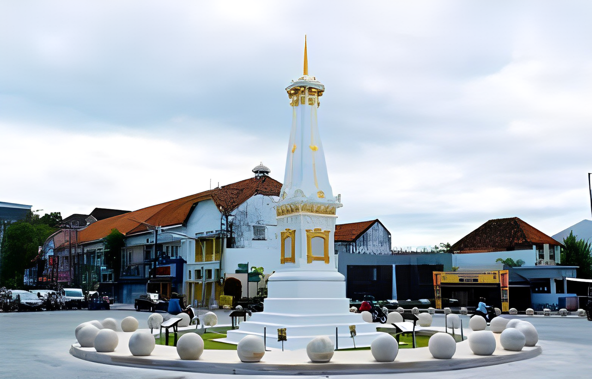
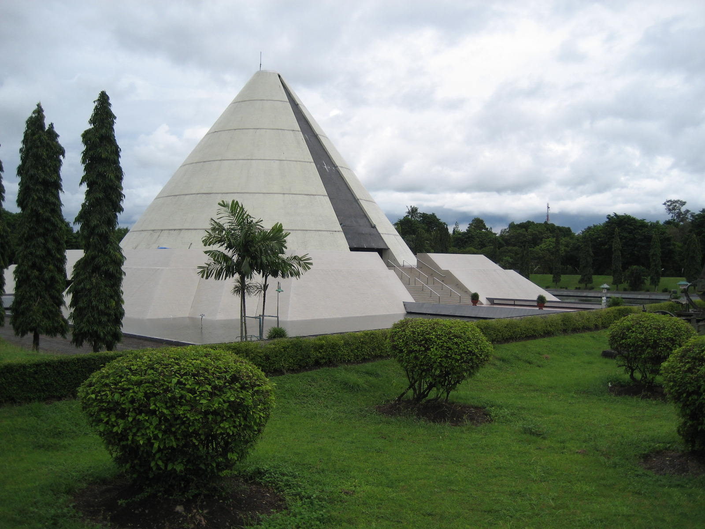
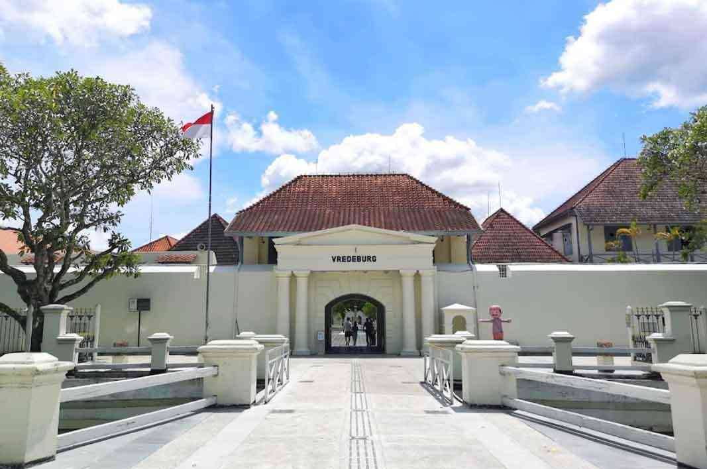
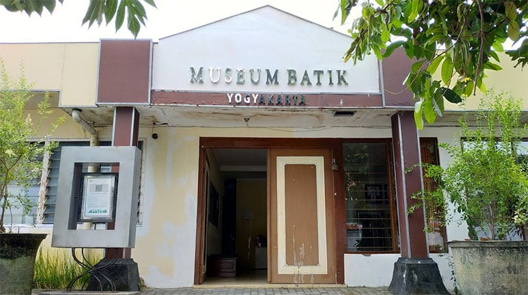
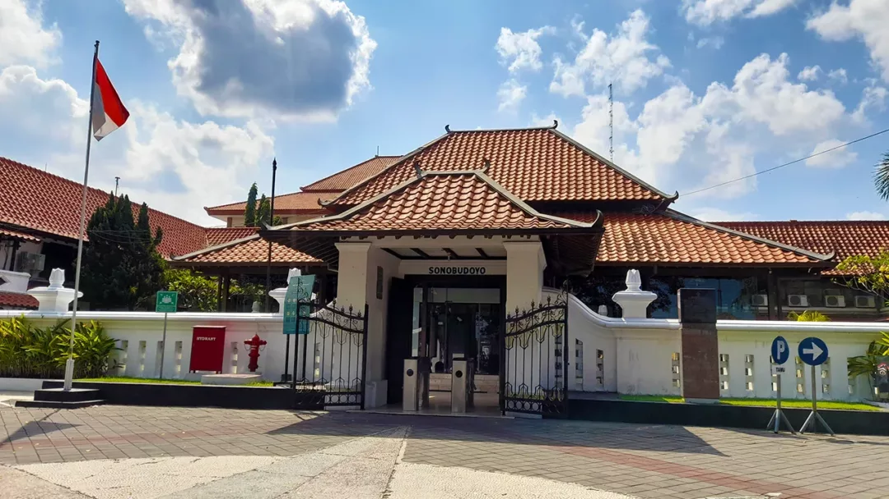
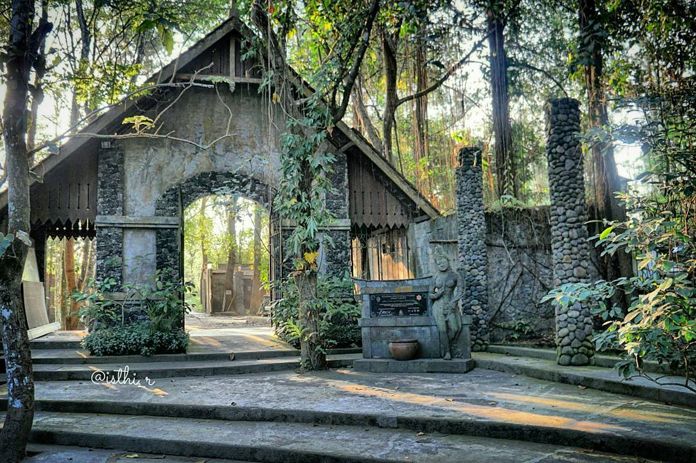
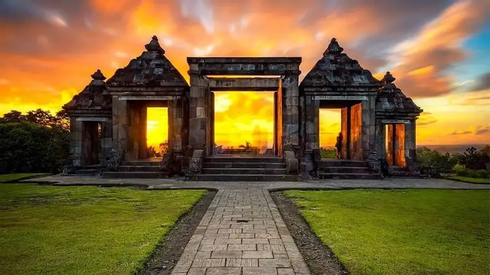
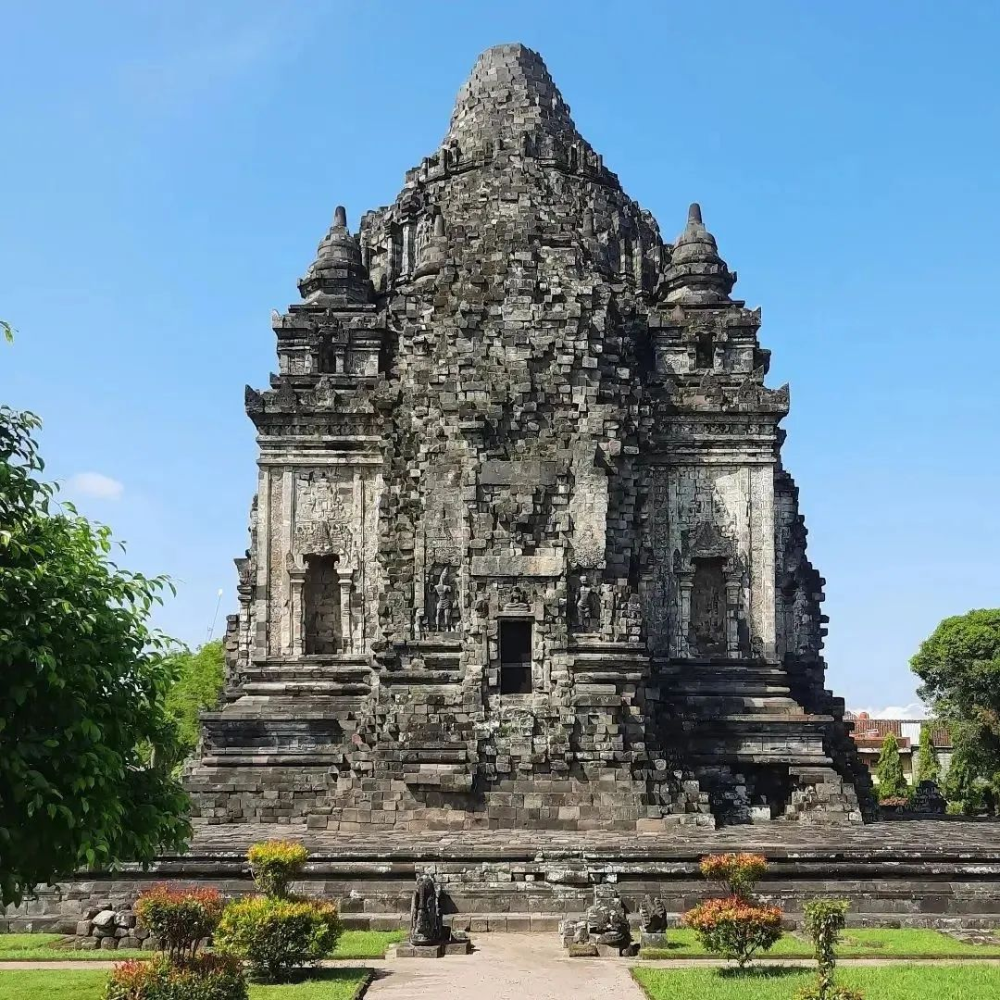
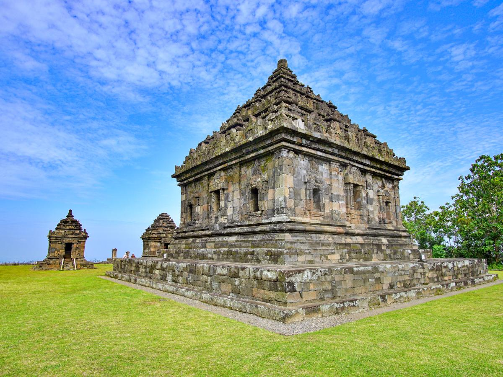

Ada lebih dari 30500 cagar budaya yang ada di jogja mencakup kategori benda struktur bangunan situs dan kawassan yang tidak mungkin kami liput satu persatu di web ini jika pengunjung ingin meliht selengkapnya tentang seluruh cagar
budaya yang aada di jogja dapaat melihatnya langsung di jogjacagar atau klik di sini












1. Tugu Yogyakarta (Pal Putih)
Tugu Jogja yang memiliki nama asli Tugu Pal Putih berada di sebelah utara Jalan Mangkubumi. Pada awalnya tugu dibangun oleh Kraton Kasultanan Yogyakarta pada masa pemerintahan Hamengku Buwana I pada tahun 1757 sebagai simbol persatuan
rakyat dalam melawan penjajahan Belanda. Tugu tersebut memiliki bentuk silinder yang disebut dengan golong dan diatasnya terdapat bolo yang disebut dengan gilig serta memiliki tinggi 25 meter. Pada tahun 1867 terjadi gempa yang mengakibatkan
Tugu Golong Gilig tersebut patah menjadi tiga bagian. Setelah itu muncul desakan untuk membangun kembali Tugu Golong Gilig oleh rakyat agar simbol perjuangan rakyat muncul kembali. Pada akhirnya tugu tersebut dibangun kembali oleh
Pemerintah Belanda, pembanguna tersebut dipimpin oleh J.W.S. Van Brussels yang pada saat itu menjabat sebagai Opzichten Van Waterstaat (sebutan kepala Dinas Pekerjaan Umum pada masa itu) dengan pihak Kraton Yogyakarta sebagai pengawas
yang diwakilkan oleh Patih Danureja V.
2. Monumen Jogja kembali
Monumen Jogja Kembali disingkat Monjali adalah sebuah museum sejarah perjuangan kemerdekaan Indonesia yang ada di Daerah Istimewa Yogyakarta dan dikelola oleh Kementerian Pariwisata dan Ekonomi Kreatif. Museum yang berada di bagian utara
kota ini banyak dikunjungi oleh para pelajar dalam acara darmawisata. Rana di pintu masuk museum Museum monumen dengan bentuk kerucut ini terdiri dari 3 lantai dan dilengkapi dengan ruang perpustakaan serta ruang serbaguna. Pada rana
pintu masuk dituliskan sejumlah 422 nama pahlawan yang gugur di daerah Wehrkreise III (RIS) antara tanggal 19 Desember 1948 sampai dengan 29 Juni 1949. Dalam 4 ruang museum di lantai 1 terdapat benda-benda koleksi: relief, replika,
foto, dokumen, heraldika, berbagai jenis senjata, bentuk evokatif dapur umum dalam suasana perang kemerdekaan 1945-1949. Tandu dan dokar (kereta kuda) yang pernah dipergunakan oleh Panglima Besar Jenderal Soedirman juga disimpan di
sini (di ruang museum nomor 2). Monumen Yogya Kembali beralamat di Jl. Ring Road Utara, Kabupaten Sleman, Daerah Istimewa Yogyakarta. Monumen Yogya Kembali dibangun pada tanggal 29 Juni 1985 dengan upacara tradisional penanaman kepala
kerbau dan peletakan batu pertama oleh Sri Sultan Hamengkubuwana IX dan Sri Paduka Paku Alam VIII. Gagasan untuk mendirikan monumen ini dilontarkan oleh kolonel Soegiarto, selaku walikota Yogyakarta pada tahun 1983. Nama Yogya Kembali
dipilih dengan maksud sebagai tetenger (peringatan) dari peristiwa sejarah ditariknya tentara pendudukan Belanda dari ibu kota RI di Yogyakarta pada waktu itu, tanggal 29 Juni 1949. Hal ini merupakan tanda awal bebasnya bangsa Indonesia
dari kekuasaan pemerintahan Belanda. Pembangunan monumen ini dilakukan dengan memperhitungkan beberapa faktor penting. Titik pusat bangunan ini merupakan sebuah titik yang secara imajiner menghubungkan beberapa titik penting di Yogyakarta
yaitu Keraton Yogyakarta, Tugu Yogyakarta, Gunung Merapi, Parangtritis Panggung Krapyak. Titik ini sendiri disebut sebagai Garis Imajiner Yogyakarta dan penanda dari titik imajiner ini sendiri berada pada lantai 3 bangunan monumen
ini.
3. Museum Benteng Vredeburg
Dikutip dari laman kebudayaan.jogjakota.go.id, Benteng Vredeburg didirikan pada tahun 1760 atas perintah Sultan Hamengku Buwono I yang menyetujui permintaan Belanda untuk membangun benteng di dekat keraton. Saat itu, Belanda merasa khawatir
dengan kemajuan keraton yang sangat pesat dan berdalih pembangunan benteng adalah upaya Belanda menjaga keamanan keraton. Akan tetapi, dibalik dalih tersebut Belanda mempunyai maksud tersendiri yaitu untuk memudahkan Belanda dalam
mengontrol seluruh perkembangan di keraton. Letak benteng yang hanya berjarak satu tembakan meriam dari keraton dan menghadap ke jalan utama menuju keraton menjadi tanda bahwa benteng tersebut digunakan Belanda sebagai benteng strategi,
intimidasi, penyerangan, dan blokade. Dengan kata lain, Belanda bermaksud mengantisipasi jika sewaktu-waktu Sultan berubah pihak memusuhi dan menyerang Belanda. Benteng Vredeburg pertama kali dibangun dengan sangat sederhana. Temboknya
berbahan tanah dan ditopang dengan tiang-tiang kayu pohon kelapa/aren dengan atap ilalang. Benteng tersebut berbentuk persegi yang di masing-masing sisinya dilengkapi bastion.
4. Museum Batik Yogyakarta
Museum Batik Yogyakarta berdiri atas prakarsa sepasang suami istri Hadi Nugroho dan Dewi Sukaningsih yang bertujuan sebagai sarana pelestarian koleksi batik dan alat-alat pendukung proses pembuatan batik. Pada 12 Mei 1979, museum ini baru
diresmikan oleh Kanwil P&K Provinsi Daerah Istimewa Yogyakarta. Jumlah koleksi mencapai kurang lebih 1200 buah yang meliputi kain batik, alat dan perlengkapan membatik seperti wajan, anglo, canting, dan lain sebagainya. Koleksi unggulannya
terdiri dari berbagai kain batik dari abad 18 sampai awal abad 19 yang berupa kain panjang dan sarung. Koleksi lain berupa batik karya Van Zuylen dan Oey Soe Tjoen, serta batik-batik buatan tahun 1700-an. Batik Van Zuylen menampilkan
corak Eropa dengan mengenalkan warna-warna baru selain merah dan biru yang klasik, ditambah dengan gradasi warna yang sempurna dengan garis-garis sederhana dan motif geometris yang rapi memunculkan gaya ragam hias dan komposisi yang
menarik.
5. Sonobudoyo Museum
Musium sunobudoyo adalah sebuah museum dan perpustakaan sejarah dan budaya Jawa di Yogyakarta , Indonesia . Museum ini berisi koleksi artefak Jawa terlengkap, setelah Museum Nasional di Jakarta . [1] Selain keramik zaman Neolitikum dan
patung perunggu abad ke-8 , museum ini juga menyimpan koleksi wayang kulit , berbagai senjata kuno (misalnya keris ), dan topeng Jawa .Museum Negeri Sonobudoyo mempunyai fungsi pengelolaan benda museum yang memiliki nilai budaya ilmiah,
meliputi koleksi pengembangan dan bimbingan edukatif kultural. Sedangkan tugasnya adalah mengumpulkan, merawat, pengawetan, melaksanakan penelitian, pelayanan pustaka, bimbingan edukatif kultural serta penyajian benda koleksi Museum
Negeri Sonobudoyo. Museum Sonobudoyo terdiri dari dua unit, yaitu Unit I yang berlokasi di Jalan Trikora No. 6 Yogyakarta, dan Unit II yang berlokasi di Ndalem Condrokiranan, Wijilan, di sebelah timur alun-alun utama (utara) kota .
6. Keraton Yogyakarta
Keraton Yogyakarta sudah menjadi paket yang tidak bisa dipisahkan lagi sebagai simbol keistimewaan yang dimiliki oleh kota Jogja. Kawasan Keraton Yogyakarta ini merupakan peninggalan sejarah dan ikon Kesultanan Yogyakarta yang memberikan
daya tarik tersendiri bagi para wisatwan yang sedang berkunjung ke Kota Jogja. Keraton Ngayogyakarta Hadiningrat atau Keraton Yogyakarta mulai didirikan oleh Sri Sultan Hamengkubuwono I beberapa bulan pasca Perjanjian Giyanti pada
tahun 1755. Lokasi keraton ini konon adalah bekas sebuah pesanggarahan yang bernama Garjitawati. Pesanggrahan ini digunakan untuk istirahat iring-iringan jenazah raja-raja Mataram (Kartasura dan Surakarta) yang akan dimakamkan di Imogiri.
eraton Jogja juga merupakan suatu lembaga adat lengkap dengan pemangku adatnya. Oleh karenanya tidaklah mengherankan jika nilai-nilai filosofi begitu pula mitologi menyelubungi keraton ini. Dan untuk itulah pada tahun 1995 Komplek
Keraton Ngayogyakarta Hadiningrat dicalonkan untuk menjadi salah satu Situs Warisan Dunia UNESCO.
7. Museum Ulen Sentalu
Museum Ullen Sentalu didirikan oleh keluarga Haryono yang mewarisi kebudayaan Jawa secara turun-temurun dari keluarga dan lingkungan tempat tinggalnya. Museum Ullen Sentalu, sesuai dengan makna semantiknya memiliki makna nyala blencong
yang menerangi. Museum Ullen Sentalu merupakan sebuah konsep dari misi pelestarian nilai dan martabat budaya Jawa. Merupakan suatu komunikator dari suatu kekayaan warisan tangible dan khususnya intangible, sehingga terjadi pertemuan
antara pewaris dan warisan budaya. Seribu enam ratus atau bahkan lebih dari dua ribu tahun. Selama itulah rentang waktu yang telah membentuk budaya Jawa yang eksis dan kita kenal hingga sekarang. Evolusinya melalui berbagai zaman :
Mataram Kuno, Medang, Kediri, Singasari, Majapahit, Demak, Pajang, juga Mataram beserta empat cabang sempalannya, yakni Surakarta, Yogyakarta, Mangkunegaran, dan Pakualaman.
8. Candi Prambanan
Candi Prambanan merupakan candi Hindu yang terbesar di Indonesia. Sampai saat ini belum dapat dipastikan kapan candi ini dibangun dan atas perintah siapa, namun kuat dugaan bahwa Candi Prambanan dibangun sekitar pertengahan abad ke-9 oleh
raja dari Wangsa Sanjaya, yaitu Raja Balitung Maha Sambu. Dugaan tersebut didasarkan pada isi Prasasti Syiwagrha yang ditemukan di sekitar Prambanan dan saat ini tersimpan di Museum Nasional di Jakarta. Prasasti berangka tahun 778
Saka (856 M) ini ditulis pada masa pemerintahan Rakai Pikatan.
9. Candi ratu Boko
Ratu Boko dibangun pada abad ke-8 oleh Wangsa Syailendra yang beragama Buddha, namun kemudian diambil alih oleh raja-raja Mataram Hindu. terletak sekitar 3 km ke arah selatan dari Candi Prambanan. Kawasan Ratu Boko yang berlokasi di atas
sebuah bukit dengan ketinggian ± 195.97 m diatas permukaan laut. Situs Ratu Boko sebenarnya bukan sebuah candi, melainkan reruntuhan sebuah kerajaan. Oleh karena itu, Candi Ratu Boko sering disebut juga Kraton Ratu Boko. Disebut Kraton
Boko, karena menurut legenda situs tersebut merupakan istana Ratu Boko, ayah Lara Jonggrang, bangunan Kraton Boko dipengaruhi oleh Hinduisme dan Buddhisme.
10. Candi Kalasan
Caṇḍi Kalasan dikategorikan sebagai candi umat Buddha. Pada awalnya hanya candi Kalasan ini yang ditemukan pada kawasan situs ini, namun setelah digali lebih dalam maka ditemukan lebih banyak lagi bangunan bangunan pendukung di sekitar
candi ini. Selain candi Kalasan dan bangunan - bangunan pendukung lainnya ada juga tiga buah candi kecil di luar bangunan candi utama, berbentuk stupa. Pada candi Kalasan ini memiliki lapisan penutup candi yang dinamakan Bajralepa,
yaitu semacam plesteran di ukiran batu halus. Detail dari hiasan Bajralepa ini yang merupakan salah satu ciri Candi Kalasan, yang juga dijumpai pada Candi Sari. Candi ini memiliki 52 stupa dan berada di sisi selatan jalan raya antara
Surakarta dan Jogja serta sekitar 2 km dari candi Prambanan.
11. candi ijo
Candi Ijo merupakan bangunan pemujaan peninggalan dari zaman Hindu-Budha. Candi Ijo diperkirakan dibangun pada tahun 850-900 Masehi pada masa pemerintahan Raja Rakai Pikatan dan Rakai Kayuwangi dari kerajaan Mataram Kuno. , Candi Ijo terletak
di Dusun Groyokan, Desa Sambirejo, Kecamatan Prambanan, Kabupaten Sleman, Daerah Istimewa Yogyakarta. Candi Ijo merupakan kompleks percandian yang berada di atas perbukitan. Kompleks Candi Ijo terdiri atas 17 struktur bangunan yang
tersebar pada 11 teras. Teras paling atas merupakan teras yang paling suci dan terdapat Candi Induk berukuran 18,43x18.45 meter dengan tinggi 16 meter. Candi Ijo pertama kali ditemukan oleh H.E. Dorrepaal pada 1886. Candi Ijo kemudian
diteliti oleh C.A. Rosemeire yang menemukan tiga buah arca batu serta lingga-yoni di bilik candi induk. Ketiga arca batu tersebut adalah arca Ganesha, arca Siwa, dan sebuah arca tanpa kepala bertangan empat yang satu di antaranya membawa
cakra.
11. Taman Sari
Taman Sari merupakan cagar budaya warisan Keraton Yogyakarta yang masih dapat kita lihat berdiri gagah. Taman sari dibangun pada masa pemerintahan Sri Sultan HB I, pada tahun 1758. Sampai saat ini istana Taman sari sudah mengalami beberapa
kali renovasi sehingga terllihat menarik tanpa menghilangkan nilai historisnya. Taman sari terletak sekitar 300 meter sebelah barat dari Keraton Yogyakarta. Keindahan Tamansari Yogyakarta salah satunya yaitu memiliki kolam air yang
dikelilingi benteng setinggi 6 meter. Pada zaman dahulu Tamansari dipergunakan untuk mandi para istri-istri Sultan HB X. Ditempat tesebut anda akan menemukan tempat semacam menara yang dipergunakan untuk melihat dan mengamati istri-istrinya
yang sedang mandi.